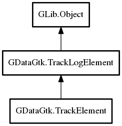

TrackElement
Object Hierarchy:

Description:
public class TrackElement :
TrackLogElement
Specifies tracking element that supports connection and logging where events are automatically dispatched to log specified at creation
Whenever event occurs while tracking is enabled new TrackLogElement is created and dispatched to log array.
Since:
0.1
Content:
Properties:
Creation methods:
Methods:
Signals:
- public signal void log_event (string event_type, string event_name)
Inherited Members:
All known members inherited from class GDataGtk.TrackLogElement
All known members inherited from class GLib.Object
- @new
- new_valist
- newv
- add_toggle_ref
- add_weak_pointer
- bind_property
- connect
- constructed
- disconnect
- dispose
- dup_data
- dup_qdata
- freeze_notify
- @get
- get_class
- get_data
- get_property
- get_qdata
- get_type
- notify_property
- @ref
- ref_sink
- replace_data
- replace_qdata
- remove_toggle_ref
- remove_weak_pointer
- @set
- set_data
- set_data_full
- set_property
- set_qdata
- set_qdata_full
- steal_data
- steal_qdata
- thaw_notify
- unref
- weak_ref
- weak_unref
- notify
- ref_count